Introduction - FITTINGS
- Path
- Procedures > 70 FITTINGS > Introduction - FITTINGS
- Kind
- repair procedure (removal / refitting; the operation number is the code)
- Applies to
- all engines; all production periods
- Interactive page
- https://sloeber94.github.io/elrnDB-fMltpl/en/#/2892684
Applies to: all engines; all production periods
REPAIRING THE VEHICLE
Vehicle identification data
The vehicle has the following identification plates:
- identification summary plate, located on the right of the front crossmember;
- bodywork marking, located on the car floor in front of the right seat (accessed by lifting the flap on the floor trim);
- body paintwork identification plate, fitted on the top of the tailgate near the hinges.
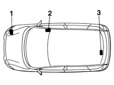
For the identification codes used and their interpretation, see the instructions in the Service Manual.
Towing points
The vehicle has two threaded seats, one at the front and one at the rear, for fitting the tow hook (which is housed in the tool box).
To access the threaded seats, remove the guards on the bumpers.
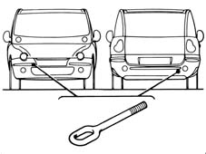
Vehicle lifting points
To lift the vehicle, using a ramp or a lift, only the areas illustrated in the diagram below should be used.
General safety warnings
The activities connected with repairing the bodywork involve the use of equipment and tools in addition to the handling of chemical products and substances for which the supplier's instructions must be followed.
It is therefore necessary to pay special attention to:
- the correct use of materials, instruments and equipment: Before carrying out any sort of operation, read the instruction manuals carefully and follow the accident prevention and safety instructions with great care.
- the workplaces for carrying out operations, which should have appropriate ventilation systems which satisfy the legal requirements concerning air exchange, the filtration of harmful substances (solvents) and dust levels.
- the handling of dangerous substances which should be carried out in accordance with the supplier's instructions and recommendations.
- the collection and disposal of refuse which should be carried out in accordance with the laws in force.
When working with and handling harmful and dangerous substances, the appropriate safety equipment should be employed (clothing, masks, gloves, goggles, etc.).
Vehicle repair operating cycles
The vehicle repair operating cycles usually consist of the following stages:
- checking the vehicle measurements;
- cutting/removing damaged elements and preparing the bodyshell for welding;
- welding the replacement parts;
- preparing for painting;
- painting;
- renewing the anti-corrosion, sound insulation and sealants.
Checking and restoring the vehicle measurements
This is the first stage of the repair operation during which the deformations suffered by the bodyshell are measured and evaluated and the elements involved are identified.
During this stage the first actual repair operation is carried out: pulling the bodyshell to restore the measurements before cutting and removing the damaged elements.
Pulling the bodyshell
Pulling the bodyshell to restore the measurements is carried out on straightening benchs, where the bodyshell can be secured using vices and attachments which should be fixed according to instructions, specific to each vehicle, provided by the supplier of the bench.
Jigs are used to check the measurements of the bodyshell. They are positioned at specified points, and are used to check the measurements indicated by the jig manufacturer for each model, or alternatively the vehicle's own measurements given in the section "DESCRIPTION AND OPERATION SEC. 7090" (VOL. 1).
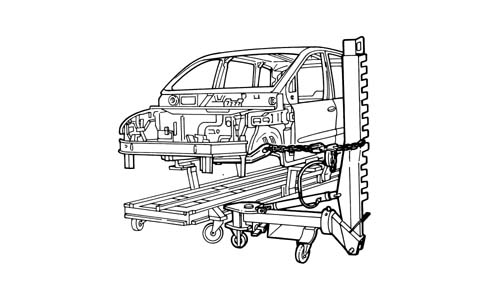
General repair instructions
For safety reasons and for a better quality repair, IT IS PROHIBITED TO:
- replace structural parts of the bodyshell without using a repair bench. The use of the bench makes it possible to guarantee the restructuring of the vehicle with the original manufacturing measurements, ensuring the correct position of the forecarriage and back-carriage elements.
- heat the structural parts of the bodyshell to straighten them.
- cut and weld, edge to end, any bodywork component and its reinforcement on the same line (remove damaged components by cutting them at the joins, observing the cutting lines given in the Service Manual. Carried out correctly, the operation involves wasting a few centimetres between the two cutting lines in order to improve the distribution of the fusible points created by the welding.)
The use of the following is required for the removal of damaged body panels:
- hack-sawing machines;
- circular saws;
- power chisels (only in case of need);
- plasma-arc cutting systems;
- electric drills;
- milling machines;
- grinding machines;
- dolly blocks and hammers;
- disc grinding wheels;
- air purifiers / extractor systems.
Hack-sawing machine
This type of saw makes it possible to carry out fast and precise cutting, with the possibility of regulating the speed of the blade to suit different situations.
Example of the use of a hack-sawing machine
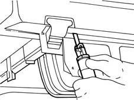
Oscillating circular saw
An oscillating saw is used in cases where high precision cutting is required; for example a box section panel to be replaced superimposed over a panel which must not be damaged.
By adjusting the speed and the number of oscillations it is possible to achieve the precision required according to the conditions of use.
The high level of safety of this instrument makes it advisable to use it as an alternative to other types of saws.
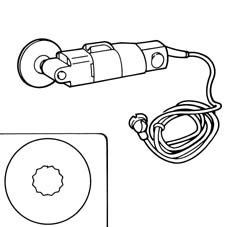
Power chisel
A pneumatic chisel is used to remove parts of body panels; it is advisable to use it:
- when it is not possible to use a power saw, milling machine or drill; for example when there is another panel behind the one being cut which must not be damaged;
- when it is possible to directly separate the welded panels, inserting the power chisel between the two panels along the join edge in order not to leave edges which need removing later on.
The different attachments increase its versatility.
Example of the use of a power chisel
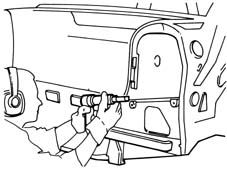
Plasma-arc cutting system
This cutting system, achieved through the combined effect of an electric arc and gas or a mixture of gases, is used whenever it is necessary to cut rather large panels. According to the thickness of the panel and the depth of the cut, regulate the value of the current and the gas flow in accordance with the instructions in the Manufacturer's manual.
Electric drill
An electric drill is normally used in cases where a milling cutter cannot be used; the correct use of the drill to remove spot welds if several panels are superimposed is illustrated in the diagrams below. The attachment to be used in these operations is identical to the one fitted on the milling cutter. The spot weld should be marked using a drift, in order to provide a support point for the centring bit, this prevents the milling cutter moving away from the spot and damaging the surrounding area; force should be exerted on the cutter until the depth reached is slightly greater than the thickness of the panel which should be removed (see diagram below).
Example of the use of an electric drill
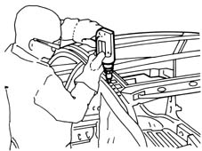
Example of the correct usage of a milling cutter
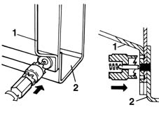
1. Panel to be removed 2. Box section panel preventing the use of a milling cutter.
Milling cutter
A milling cutter for removing spot welds should be used after cutting the panel to be replaced in order to allow the removal of the panel offcuts remaining on the edges of the bodyshell.
The milling cutter acts on the panel which constitutes the offcut, cutting it as far as the panel underneath and thereby isolating the spot weld.
After the reduction of all the spot welds. the offcut is removed using pliers.
Example of the use of a milling cutter
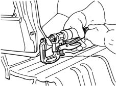
Dolly blocks and levers
These instruments are used when panels need to be straightened by beating, in order to have a counter-action point to support the panel.
Dolly blocks are shaped so that they can adapt to different shaped panels and, when the work area allows, they can replace the hammer.
Levers are used in the same way as dolly blocks, however they are designed so that they can be introduced through restricted openings and spaces to get to areas which are difficult to reach.
Dolly blocks and levers are also used to eliminate distortions from the edges of panels which are not removed, thereby allowing correct matching with the replaced panels, avoiding weakening the structure.
Welding replacement elements
Parts of the fuel system
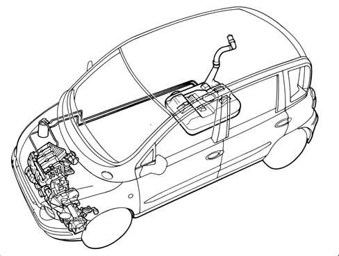
Welding bodywork elements should be carried out, according to requirements, using different methods:
- Spot welding;
- seam (MIG) welding;
- brazing.
Equipment
The following equipment is used for these operations:
- welding guns;
- seam (MIG) welders;
- oxy-acetylene torches (brazing).
General information on electric spot welding
In electric spot welding a current is passed through the metal to provide the resistance required for the necessary heat to melt the metal.
Spot welding is carried out on panels where the join edges overlap and the panel metal melts; no metal filler is therefore needed for this type of welding.
In areas where three or more panels overlap, spot welding should be repeated for a second time.
The type of join produced is not continuous; to create a join with good mechanical strength the spot welds must be correctly spaced following precise instructions (see tables below).
Spot welding
In the case of spot welding, check::
- that the arms are correctly aligned;
- that the diameter of the edges of the electrodes is correct;
- the planarity and that the weld edges are correctly matched;
- that the welding sequence is correct.
Spot welder, geometric characteristics of the electrode according to the thickness of the panel and the welding sequence.
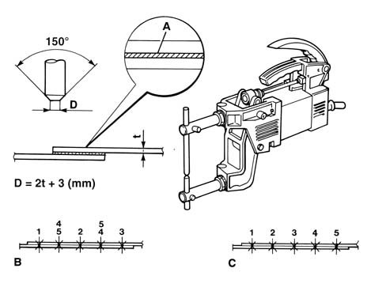
A. Electro-weldable galvanizing protective B. Correct welding sequence C. Incorrect welding sequence D. Electrode dimension
Table of reference values for carrying out spot welds
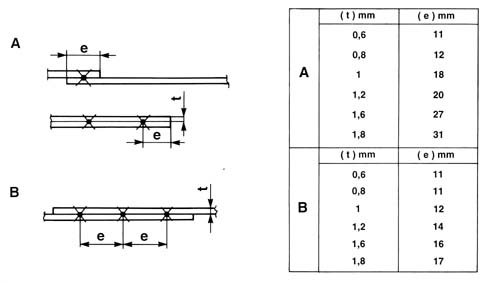
A. Table for determining the distance of the spot welds from the edges of the panels according to their thickness. B. Table of reference values for the correct spacing of the spot welds according to the thickness of the panel.
Example of correct spot welding at corners
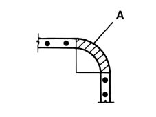
A. Area where welding should not be carried out
Seam (mig) welding
MIG welding should be used for parts where spot welding cannot be used.
When carrying out seam (MIG) welding, check:
- the speed
- that the seam weld beads have been correctly made (alternating weld sections)
In this welding system (automatic advance seam) a protective inert gas atmosphere is used (hence the name M.I.G. which stands for Metal Inert Gas).
The continuous progress of the seam (which constitutes both the electrode and the filler metal), allows long welds to be made without interruption.
The flow of inert gas sent to the welding area eliminates the surrounding air preventing the oxidation of the metal and therefore has the function of providing a protective layer for the weld. For these reasons, MIG welding differs from welding carried out with a coated electrode through the absence of dross on the welding bead; also there are no pores which can occur during normal arc welding.
Operating methods
In order to weld two panels correctly using a MIG welder: grind or pickle the panel thoroughly, place the equipment in a sensible position so that whilst carrying out the welding the outer casing of the torch does not become twisted or assume positions which could hinder progress, wear protective clothing and a suitable mask with non-actinic glass (glass standard no. 8 for currents of 40/60A and no. 9 for currents of 80/200A); ensure a good electrical contact.
Regulate the flow of gas according to the instructions of the equipment Manufacturer.
Make two spot welds at the two ends of the join line and one at the centre, then make spot welds in the middle of the two sections defined in this way. The spot welds should be 25-30 mm apart.
The diagram below illustrates correct welding.
Carrying out a weld using inert gas (MIG) for joining two matched panels.
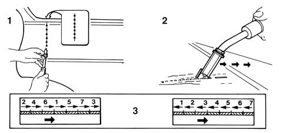
It is not advisable to initially carry out a seam weld because, in addition to being difficult to do, it can cause distortion of the panel through the accumulation of heat involved.
The difficulty in carrying out a single seam weld lies in the need to move the torch rather slowly in order to ensure good weld penetration, but sufficiently quickly not to risk "burning" the panel. Moving the torch too quickly also means that the weld seam will be poor because, after grinding the bead, an insufficient layer of filler material remains to guarantee the strength of the join.
After the initial spot welding of the panel, the spot welds should be ground to the level of the panel using a rigid disc grinder.
At this point the alignment of the panels should be checked and, if necessary, corrected using a hammer and steel dolly block.
Then proceed with filling the gaps between the various spot welds carrying out alternating welding sections, keeping the torch at an angle of around 60°, (see diagram above).
Tacking the join. The tack welds are illustrated from the rear of the panel.
Carrying out the welding.
Two alternatives are illustrated for the correct sequence of welding to be carried out to avoid deformations of the panel.
The fact that the weld has been carried out correctly is confirmed from the rear of the weld bead which should show a series of spherical bumps along the entire length of the join.
The MIG welder can also be used for joining overlapping panels where only one side is accessible.
To carry out the welding, the panels must adhere perfectly and the torch should be kept perpendicular to the surface.
In this way the action of the electrode melts the first panel initially, then the second, producing a crater which is filled as the electrode advances.
In order to carry out this operation correctly, the welder must be adjusted to the correct current value for the thickness of the panels being worked on and pressure must be applied to the surface, with the torch resting on its supports, to facilitate the matching of the panels.
Where the thickness of the panels is more than 1.5 - 2.5 mm, holes 0.6 mm in diameter must be made level with the spot welds.
Carrying out inert gas (MIG) welding to join overlapping panels
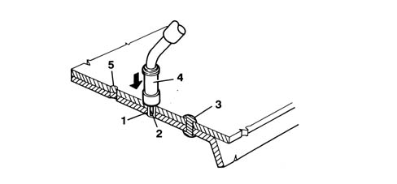
1, Area where panels are joined 2, Electrode 3, Spot weld 4, Torch 5, Hole (only for thick panels)
General instructions for exposed welding
Below are some important instructions not to be underestimated:
- incomplete penetration (p) should be 15-30% of the thickness of the panel (see diagram below - point A incorrect welding, point B correct welding);
- the height of the bead (a) should be 60% of the thinnest thickness (s), the clearance (g) between the panels before welding should be 20% of the thinnest thickness for at least two thirds of the length (l) of the bead, (see diagram below, point C and detail X). The diagram indicates the value of the convexity (c) of the bead according to the length (l) of the weld.
- the shape of the bead section should have a convexity (e) which depends on the length of the actual bead (see diagram below, point D).
Examples of welding
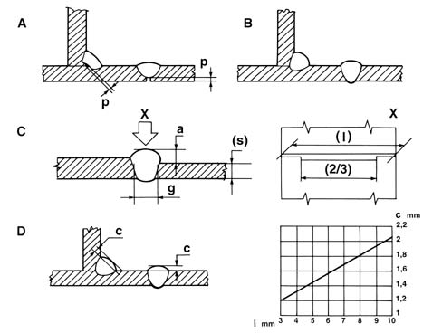
Brazing
Brazing is only used if the panels being replaced have been welded by this method, with the welding only carried out at the points defined by the Manufacturer.
This type of welding does not guarantee mechanical characteristics which are comparable with the other systems described previously and therefore is not used for joining structural parts.
Air filtration and purification system
When carrying out operations which produce fumes, gases and dust which is dangerous to the operator, air filtration and purification systems must be used.
These systems are adapted to suit the varying requirements and their size depends on the volume of air to be purified. These systems usually operate through the combined action of mechanical and electro-static filtration and purification through active charcoal.
The filtration takes place in two stages; mechanically eliminating the largest particles of dust through wire gauze and then by subjecting the air flow to ionization which statically charges the particles of dust which will then be eliminated through the electro-static process.
The air flow is then purified by passing through active charcoal filters.
In addition to their efficiency, handling and noise levels in these systems have been improved so that they never create a nuisance.
The diagram below illustrates a possible conformation described above.
Example of a portable air filtration and penetration system
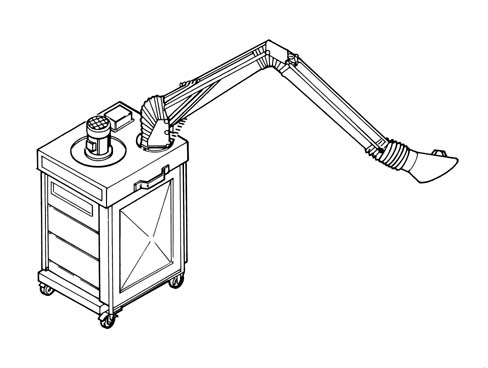
PAINTING
Introduction
Painting the bodyshell has two fundamental objectives; protecting the surfaces of the panels from environmental attack and, from an aesthetic point of view, producing a shiny, bright colour.
The large number of chemical products used in painting operations requires special care to be taken over their handling and usage.
These painting operations involve the emission of paint fumes and solvent vapours which, if inhaled by the operators, can seriously affect their health and they should only be carried out in special spray booths.
The operator should always wear a mask and protective clothing.
These masks can be the filtration type for brief operations and the total protection pressurized type for longer operations.
Equipment
The following equipment is used during painting operations:
- filtration masks and protective clothing;
- masking materials and tape;
- spray booths and drying ovens;
- spray guns;
- infra-red lamps;
- polishers.
Protective clothing
When carrying out painting operations, suitable clothing should always be worn, so that the operator is well protected from contact with harmful agents.
It is also advisable to use a barrier cream applied to the most exposed uncovered areas (face, hands and arms), and this should be removed at the end of the painting operations.
Filtration mask
This type of mask only protects the operator's respiratory tracts and goggles and hair protection should also be used at the same time.
Its use is recommended for small retouching operations.
Example of a filtration mask
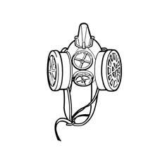
Pressurized mask
This mask guarantees all round protection of the face and hair, providing pure air by means of the compressed air system which operates the spray gun.
The air is further purified with a degree of separation approaching 100% by an active charcoal filter fitted to the operator's belt.
The slight excess pressure created inside the helmet prevents the infiltration of paint vapours.
The use of this mask is advisable for lengthy painting operations.
Example of a pressurized mask
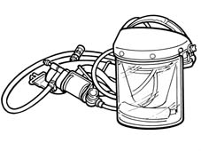
Spray booth
Painting and drying operations for prepared parts should be carried out in spray booths. If the extent of the damage repaired is medium to large, it is advisable to use a special spray booth and a hot air oven for drying the paint.
The workplace must be equipped with an air conditoning system and filtered by purifiers, mainly consisting of renewable active charcoal filters.
The optimum painting conditions which should be maintained in the booth during painting are as follows:
- constant temperature of between 22 -25 °?
- constant humidity of between 75-80%
The workplace in question can be:
- a combined type spray booth and drying oven;
- a separate type spray booth and drying oven.
Spray guns
The development of ergonomics and spraying techniques has led to the definition of a new type of spray gun with high air volume and low atomization pressure, where the paint mist is considerably reduced.
This type of spray gun is lighter with a grip designed to reduce tiredness and the onset of cramp and has a trigger which requires far less effort than traditional spray guns.
The handling of the spray gun has also been made easier through the balance and the reduced visual restriction which allows greater control when working.
The most interesting aspect of this spray gun is the supply system which allows painting in any direction, even with the reservoir pointing downwards, also improving cleaning procedures with a considerable saving in time and materials.
The possibility of painting from the top or from the bottom, in addition to avoiding the formation of areas which are too wet or too dry, facilitates access to areas of the bodywork which are difficult to reach.
Special attention has been paid to the ease of adjustment which requires minimal, simple movements.
This spray gun has an extremely high efficiency combined with a very fine atomization capacity for any product, even water soluble products, used at pressures equal to or below 0.7 g (10 PSI). Thanks to these capacities for exploiting the painting material, considerable savings are achieved in financial terms and the working environment is improved. The diagram below illustrates several possibilities for using spray guns.
Using a spray gun
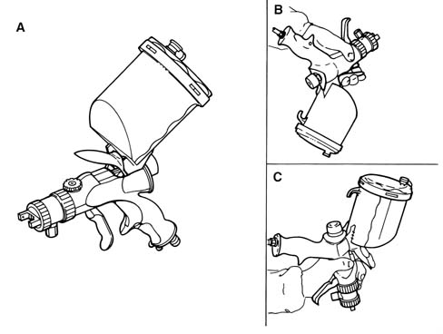
A, Normal method of use B, Use from the bottom to the top C, Use from the top to the bottom
Portable infra-red lamps
If the operation only involves small retouches, the use of a drying oven is not advisable. In such cases drying the paint can be done using special infra-red lamps fitted on parabolic mirrors.
The use of one or more lamps positioned in such a way that an even temperature is produced on the surface of the area retouched, allows the drying of the paint film and produces results which are comparable to those obtained in drying ovens.
These types of lamps considerably reduce the drying times, also reducing energy consumption.
The lamp should only be used when the paint has undergone a degree of drying so that it is "outside the powder" condition.
Drying a retouched area using a portable infra-red lamp
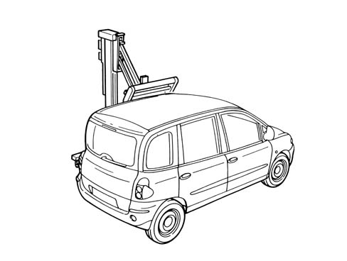
Polishers
The operation of polishing the paint should only be carried out after drying the enamel and after the metal panel has cooled down to ambient temperature.
Polishing is also necessary if there are defects in the paintwork such as dust, paint fumes, drips, orange peel, small scratches.
There are many products designed to eliminate these defects which should be applied either manually or mechanically, using a polishing machine.
The tool should be held parallel to the surface to be polished and should not be held at an angle, to avoid the paint overheating and the creation of circular, concentric grooves.
The diagram below illustrates the correct way of holding the polisher.
Correct use of a polisher
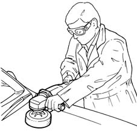
Painting cycles
The painting operations vary according to the type of operation.
The sequence of operations is described in the paragraphs which follow.
Painting a replacement panel - screwed (with the original part treated with cataphoresis on electrogalvanized panels)
Operating cycle for "Pastel" enamel
- 1. Clean the replacement panel, to remove any traces of dust, grease, etc. using a "VOC" low volatile organic compound detergent product (sand any areas where rust may have formed during storage).
- 2. Carry out a slight "surface" dry sanding using P 220 - P 240 grade abrasive paper, using a power sander equipped with a suction system only on the panel being painted.
- 3. Clean with a low "VOC" detergent product or an anti-silicone product.
- 4. Blow through the entire panel with compressed air.
- 5. Apply a chrome-free passivating product (wash primer) in a single coat to the areas stripped following the instructions from the supplier.
- 6. Apply sealant, if originally present, through extrusion to panel joins/matches following the supplier's instructions.
- 7. Apply the high solid filler, prepared previously, following the supplier's instructions. Wait 10 - 15 minutes before starting the drying.
- 8. Dry in an oven at a temperature of 40° ÷ 60° ? f?? aß??t 30 - 40 minutes.
- 9. Finish off with P 400 grade abrasive paper (making sure that the part is at ambient temperature), dry sanding using power sanding machines fitted with a suction system and repeat operation 3.
- 10. Blow through the entire panel with compressed air.
- 11. Clean with a low "VOC" detergent product or an anti-silicone product and polish with an anti-static cloth.
- 12. Apply the normal or high solid twin component acrylic coat, prepared previously, following the supplier's instructions.
- 13. Dry in an oven at a temperature of 60°? f?? 40 µ???tes.
- 14. If necessary, mechanical or manual polishing of the retouch or the painted panel (and possibly the adjacent area) with fine grade abrasive paste and/or polish. It is advisable to carry out this operation at least 24 hours after drying.
Painting a replacement part - screwed (with the original part treated with cataphoresis on electrogalvanized panels)
Operating cycle for "Twin Layer Pastel" enamel
- 1. Carry out the pastel cycle up to and including point 11.
- 2. Apply the pastel opaque base tint in accordance with the supplier's instructions.
- 3. Dry for 10 - 20 minutes at ambient temperature.
- 4. Apply the normal or high solid twin component acrylic clear coat, prepared previously, following the supplier's instructions.
- 5. Dry for 15 - 20 minutes at ambient temperature (20°C) and then dry in an oven at a temperature of 60°C for 40 minutes.
- 6. If necessary, mechanical or manual polishing of the retouch or the painted panel (and possibly the adjacent area) with fine grade abrasive paste and/or polish. It is advisable to carry out this operation at least 24 hours after drying.
Painting a replacement panel - screwed (with the original part treated with cataphoresis on electrogalvanized panels)
Operating cycle for "Twin Layer Metallic" enamel
- 1. Carry out the pastel cycle up to and including point 11.
- 2. Apply the metallic base tint in accordance with the supplier's instructions.
- 3. Dry for 10 - 20 minutes at ambient temperature.
- 4. Apply the normal or high solid twin component acrylic clear coat, prepared previously, following the supplier's instructions.
- 5. Dry for 15 - 20 minutes at ambient temperature and then dry in an oven at a temperature of 60°C for 40 minutes.
- 6. If necessary mechanical or manual polishing of the retouch or the painted panel (and possibly the adjacent area) with fine grade abrasive paste and/or polish. It is advisable to carry out this operation at least 24 hours after drying.
Painting a replacement panel - welded (with the original part treated with cataphoresis on electrogalvanized panels)
- 1. Clean the replacement panel, to remove any traces of dust, grease, etc. using a "VOC" low volatile organic compound detergent product (sand any areas where rust may have formed during storage).
- 2. Dry sand the areas involved in the welding with P 80 - P 120 grade abrasive paper using a sanding machine fitted with a suction system.
- 3. Carry out a slight "surface" dry sanding using P 220 grade abrasive paper, using a power sander equipped with a suction system only on the panel being painted.
- 4. Clean with a low "VOC" detergent product or an anti-silicone product.
- 5. Blow through the entire panel with compressed air.
- 6. Apply a chrome-free passivating product (wash primer) in a single coat to the stripped areas following the instructions from the supplier.
- 7. Fill the areas of the join affected by the welding using polyester filler, following the supplier's instructions.
- 8. Dry sand with P 100 - P 120 grade abrasive paper using a sanding machine fitted with a suction system and carry out operations 4 and 5.
- 9. Apply sealant, if originally present, through extrusion to panel joins/matches following the supplier's instructions.
- 10. Apply the high solid filler, prepared previously, following the supplier's instructions. Wait for 10 - 15 minutes before starting the drying.
- 11. Dry the base coat in an oven at a temperature of 40° - 60° ? f?? aß??t 30 - 40 minutes.
- 12. Finish off with P 400 grade abrasive paper (making sure that the component is at ambient temperature), dry sanding using power sanding machines fitted with a suction system.
- 13. Blow through the entire panel with compressed air.
- 14. Clean with a low "VOC" detergent product or an anti-silicone product, and polish with an anti-static cloth.
Continue with the cycle for pastel/metallic tints in accordance with the supplier's instructions.
Painting a repaired panel (operation on bare panel)
Operating cycle for "Pastel" enamel
- 1. Dry sand the area to be retouched with P 150 - P 200 grade abrasive paper using power sanders, taking care to level the surrounding area and eliminate any traces of corrosion on the exposed panel.
- 2. Suction the dust and clean with a low "VOC" detergent product or an anti-silicone product.
- 3. Blow through with compressed air.
- 4. Apply a chrome-free twin component passivating product to the repaired area in a single coat, following the supplier's instructions.
- 5. If necessary fill the area with air-drying twin component polyester filler. Dry sand the filled area with P 80 - P 120 grade abrasive paper using sanding machines fitted with a suction system; carry out operations 3 and 2.
- 6. Further application of the product in a single coat on the areas of the panel exposed during sanding.
- 7. Fade in high solid filler, prepared previously, onto the filled area, following the supplier's instructions, and wait 10 - 15 minutes before starting drying.
- 8. Dry the base with an infra-red lamp: initial distance 50 - 60 cm for 5 minutes, then move the lamp to a distance of 35 - 40 cm for 15 minutes; alternatively dry the base in an oven at a temperature of 60°? f?? 40 µ???tes.
- 9. Dry sand with P 400 grade abrasive paper (making sure that the component is at ambient temperature), using a sanding machine fitted with a suction system. - carry out operations 3 and 2; clean the surface with an anti-static cloth.
- 10. Apply the normal or high solid twin component acrylic clear coat, prepared previously, following the supplier's instructions.
- 11. Dry the touched-up area in an oven at a temperature of 60°C for 40 minutes; alternatively dry the base using an infra-red lamp: initial distance 50 - 60 cm for 5 minutes, then move the lamp to a distance of 35 - 40 cm for 15 minutes.
- 12. If necessary, mechanical or manual polishing of the retouch or the painted panel (and possibly the adjacent area) with fine grade abrasive paste and/or polish. It is advisable to carry out this operation at least 24 hours after drying.
Painting a repaired panel (operation on bare panel)
Operating cycle for "Twin Layer Metallic" enamel
- 1. Carry out the cycle for Pastel tints up to and including point 9.
- 2. Apply the metallic base following the supplier's instructions.
- 3. Dry for 10 - 15 minutes at ambient temperature.
- 4. Apply the normal or high solid twin component acrylic clear coat, prepared previously, following the supplier's instructions.
- 5. Dry for 15 - 20 minutes at ambient temperature and then dry in an oven at a temperature of 60°? f?? 40 µ???tes.
- 6. If necessary, mechanical or manual polishing of the retouch or the painted panel (and possibly the adjacent area) with fine grade abrasive paste and/or polish. It is advisable to carry out this operation at least 24 hours after drying.
Painting bumper - replaced
- 1. Clean the bumper ordered from the Parts Division to remove any traces of dust, grease, etc. using an anti-static product because it is protected by a special base coat for the subsequent painting.
- 2. Rub down the surface to be painted, with P 360 - P 400 grade abrasive paper, using a sanding machine fitted with a suction system.
- 3. Suction the dust and clean using a low "VOC" anti-static product.
- 4. Blow through the entire panel thoroughly.
- 5. Clean the surface with an anti-static cloth.
- 6. Apply the chrome-free twin component passivating product (plastic base coat) to all the stripped areas in a single coat, following the supplier's instructions.
- 7. Apply the pastel/metallic base tint, prepared previously, following the supplier's instructions.
- 8. Apply the normal or high solid twin component acrylic clear coat, prepared previously, following the supplier's instructions.
Painting a plastic(replacement) element (kmc compound material)
- 1. Clean the screwed (plastic) part ordered from the Parts Division to remove any traces of dust, grease, etc. using a low "VOC" detergent product or an anti-silicone product.
- 2. Carry out a slight "surface" dry sanding, only on the plastic involved with the painting, with P 220 - P 240 grade abrasive paper using a sanding machine fitted with a suction system.
- 3. Suction the dust and clean using a low "VOC" detergent product.
- 4. Apply high/medium solid filler, prepared previously, following the supplier's instructions.
- 5. Finish with P 320 - P 400 grade abrasive paper using a sanding machine fitted with a suction system and repeat operation 3.
- 6. Blow through the entire panel thoroughly.
- 7. Clean the surface with an anti-static cloth.
- 8 Apply the pastel/metallic/metallescent base tint, prepared previously, following the supplier's instructions.
- 9 Apply the normal or high solid twin component acrylic clear coat, prepared previously, following the supplier's instructions.
Painting a non replaced body panel/plastic (kmc) element "cosmetic cycle"
- 1. Dry sand the panel with the defect in the applied PV, with P 360 - P 400 grade abrasive paper, using a sanding machine fitted with a suction system.
- 2. Suction the dust and clean the panels with low "VOC" detergent or with an anti-silicone product, whilst a low "VOC" anti-static product should be used for plastics.
- 3. Blow through the entire panel thoroughly.
- 4. Clean the surface with an anti-static cloth.
- 5. Apply the pastel/metallic/metallescent base tint, prepared previously, following the supplier's instructions.
- 6. Apply the normal or high solid twin component acrylic clear coat, prepared previously, following the supplier's instructions.
Renewing the anti-corrosion treatments, sound insulation and sealants.
The treatments to which the bodyshell is subjected to achieve the necessary resistance to corrosion, sound inslation and sealing can be damaged or destroyed by repair operations.
They should therefore be renewed, as appropriate during the repair operations, so that the vehicle is restored to its original condition.
Equipment
The following equipment is used:
- power guns for sealant product extrusion;
- foam injection systems;
- wax-based oil injection systems.
The internal anti-corrosion protection must be renewed in box sections which have been replaced or repaired by welding or overheating through:
- the application of rust converter in the overheated or welded areas which require drying for at least 24 hours at ambient temperature (20 °?);
- the application of wax-based protection in the replaced or repaired box section;
- renew the rigid type expanded polyurethane foam in the box sections;
- where necessary, restore the sealing of the joins.
Carry out the sealing, following the instructions given below, in the flanges of the moving parts (tailgate, bonnet) supplied as spares:
- on replacement parts treated with cataphoresis, clean the areas concerned with heptane or anti-silicone/anti-static solvents;
- apply a bead of polyurethane sealant in the shape and position illustrated in the diagram;
- leave the sealant to dry for 24 hours at ambient temperature (20 °?) or 40 minutes at 60 °C;
- carry out the normal painting of the component.
Apply sound-deadening paint on external parts which have been replaced or repaired, as required.
Example of application of sealant
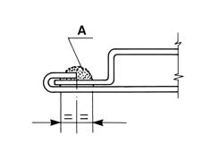
A, Sealant